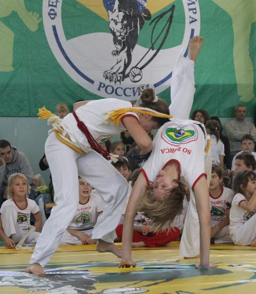

В Москве прошел городской чемпионат по капоэйре (Российская газета, 24.10.2011)
Ого, про капуэйру написали в официальном печатном органе Кремля. Круто! Круто! ФКР!

В минувшие выходные в Москве прошел городской чемпионат по капоэйре. В спортивном комплексе, затерявшемся среди панельной застройки Марьиной рощи, собрались сотни поклонников этого экзотического вида спорта.
На стене вывесили транспарант с изображением бразильского флага. Настоящая капоэйра проходит под ритмы биримбау — инструмента, напоминающего лук с резонатором, — бубнов и больших африканских барабанов. Своего оркестра у доморощеных капоэйристов нет: пришлось обойтись фонограммой.
Экзотическая борьба капоэйра пришла в Россию в конце прошлого века на волне моды на бразильское, вместе с сериалами про рабыню Изaуру и зажигательной ламбадой. С 1998 года в нашей стране существует федерация этого вида спорта, имеющая государственную регистрацию. Ныне капоэйрой занимаются от мала до велика во многих городах: в одной столице существуют несколько десятков секций.
Популярность вполне объяснима: это не йога, где из вас запросто могут сделать вегана и фанатика, негативно относящимся ко всем религиям кроме «единственно верного» учения своего гуру. В капоэйре есть свои ритуалы посвящения, как и в восточных единоборствах. Но это лишь дань традициям: когда-то это было боевое искусство африканских рабов, завезенных в Бразилию. Споры ведутся о происхождении названия: согласно одной из версий, это слово означает куриную клетку. Согласно другой, переводится как движения петуха во время петушиных боев.
Бои могут показаться странными на первый взгляд. Здесь не встают в статические стойки как в традиционных видах борьбы: противники постоянно находятся в движении, пытаясь нанести удар ногой или уйти от него. Здесь девчонки выходят состязаться с мальчишками. На татами радостно прыгают и шестилетние карапузы, и молодые люди призывного возраста.
Вместо того чтобы поскорей расквасить друг другу физиономии, участники поединка ходят на руках, демонстрируют акробатические трюки. Будто не дерутся вовсе, а просто танцуют. И все это происходит под латиноамериканскую музыку. Нокаутировать в капоэйре нет необходимости. Противники обмениваются подсечками, нужно вынудить соперника упасть или совершить побольше досадных ошибок, тогда судья объявит вас победителем.